El coquena
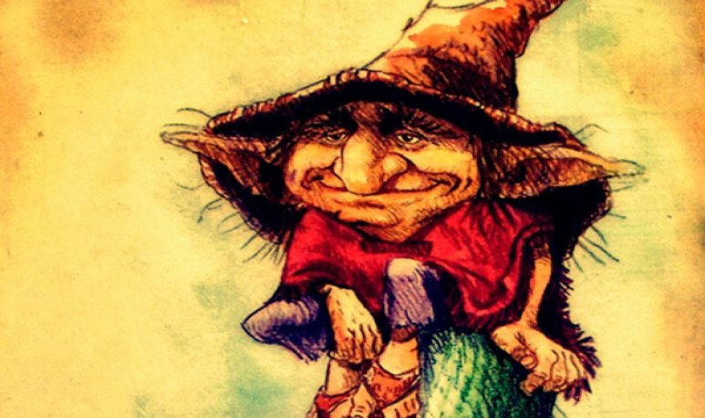En las vastas soledades de la puna, los rebaños están resguardados. Un ser misterioso y diminuto, un pequeño ser mágico, es quien protege sus vidas de las acciones crueles de los humanos. Nadie ha tenido el privilegio de ver a Coquena. Se dice que tiene apariencia de un hombre mestizo, vistiendo una chaqueta y pantalones hechos de suave pelaje de vicuña. También lleva pequeñas sandalias y un sombrero amplio tejido con delicados cabellos. Desde lo alto, vigila a sus animales sin ser descubierto. Solo se ha escuchado su silbido, un llamado mágico. Pero su presencia es tan segura que todos le temen. Por eso, evitan matar vicuñas y llamas para aprovechar su precioso pelaje.
La ciudad abajo del Brealito
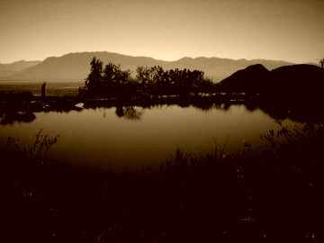En una ciudad próspera y devota, la abundancia económica y los vicios corrompieron a los habitantes, alejándolos de su fe. Un anciano humilde llegó a la ciudad y advirtió sobre las consecuencias de su comportamiento pecaminoso, pero no le hicieron caso. El anciano encontró refugio en una familia virtuosa y les aconsejó que abandonaran la ciudad y no miraran hacia atrás durante los desastres. Cumpliéndose sus palabras, la ciudad fue destruida y ahora yace en ruinas bajo el agua. Se cuenta que las campanas de la iglesia, antes despreciadas, suenan melancólicas por las almas condenadas que lloran sus errores terrenales.
La viuda de Campo Caseros
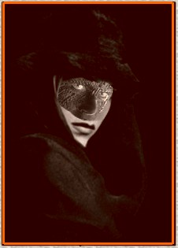En el siglo XIX, se construyó una línea de tren llamada C-13 en Salta. Tras su inauguración, ocurrió una tragedia cuando un hombre empujó a su esposa a las vías del tren durante una pelea en un almacén de la calle Caseros. Después de este incidente, los vecinos comenzaron a escuchar voces y ruidos del tren en ciertas noches, e incluso vieron a una mujer vestida a la antigua sentada cerca de las vías, llorando desconsoladamente. Sin embargo, cuando alguien intentó consolarla, se dieron cuenta de que era una calavera. Los vecinos buscaron ayuda de un fraile que bendijo el lugar y colocó una cruz en el terraplén ferroviario donde ocurrió el trágico suceso. Desde entonces, la aparición de la Viuda cesó y la cruz fue reemplazada varias veces a lo largo de los años, siempre cerca de un muro construido en el lugar.
El Duende del Sombrero
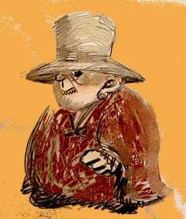Se cuenta la historia de un ser llamado "El Duende del Sombrero", quien se dice que es un niño que murió sin ser bautizado o un niño malo que maltrató a su madre. Este ser es de corta estatura y lleva un sombrero grande. Llora de una manera muy peculiar, similar a la de una criatura. Sus manos son distintas: una está hecha de hierro y la otra de lana. Cuando se acerca a alguien, le pregunta con qué mano desea ser golpeado. Algunos afirman que, sin importar la elección, el duende siempre golpea con la mano de hierro. Otros, por otro lado, aseguran que los desprevenidos eligen la mano de lana y que en realidad es esta la que causa más dolor. El Duende del Sombrero tiene unos ojos malignos y dientes muy afilados. Suele aparecer durante la siesta o por la noche en cañones o zonas montañosas. Tiene preferencia por los niños pequeños, aunque también golpea sin piedad a los adultos.
El viento Zonda
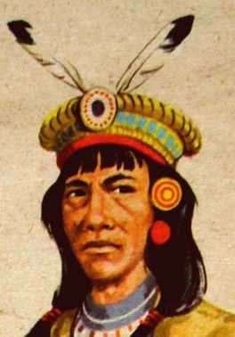En el noroeste es conocida esta leyenda, cuyo protagonista es Gilanco, un indio altivo y dominador, caudillo de su tribu y temido por su valor. Era el mejor cazador y por eso despertó varias veces las iras de Llastay y de la Pachamama, quienes le recriminaban la matanza despiadadas de aves y guanacos. Un día la Pachamama le anunció por ello su castigo: vendría El Zonda, viento cálido y seco, incendiando los campos y dejando yermas las tierras entonces fértiles. “Por la soberbia de Gilanco –dicen los concejos- “El Zonda” arruina las tierras de Calchaquí, y cuando las rachas que le preceden silban tristemente colándose por entre las piedras de la pirca y las quinchas de los ranchos, tienen miedo los nativos y se santiguan creyendo que es el alma del cacique condenada a vagar, convertida en viento y llega a contarles su castigo e impetrar perdón de su pecado”
El Familiar
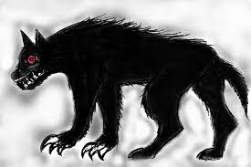La leyenda cuenta la historia del Familiar, un demonio que ofrece protección y fortuna a aquellos que lo invocan, a cambio de que le entreguen una persona al año para satisfacer su apetito. En una versión particularmente difundida, a principios del siglo XX, el dueño del Ingenio Santa Ana decidió invocar al Familiar para obtener años de prosperidad y buenas cosechas, a cambio de sacrificar la vida de uno de sus obreros cada año. Con el tiempo, se dijo que cada fábrica tenía su propio Familiar. Los propietarios mantenían a estos demonios ocultos en sótanos y los alimentaban una vez al año utilizando engaños para atraer a los obreros a la misma habitación donde se encontraba el demonio. También se dice que los dejaban sueltos en los cañaverales para cazar a los intrusos que intentaban ingresar a la fábrica por la noche, incluyendo a los guardias contratados con el único propósito de ser devorados por estos familiares.
El Ucumar
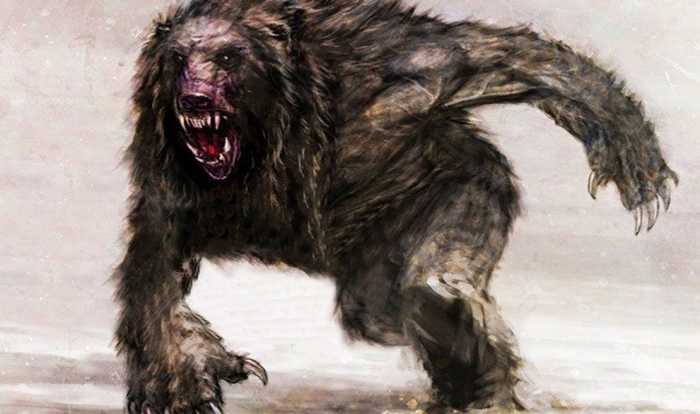El Ucumar es una criatura mítica que se asemeja a un oso de gran tamaño con rasgos humanos. Su nombre significa "abuelo cansado" en quechua debido a su apariencia vieja y cansada. Esta criatura es considerada un guardián de la naturaleza y protege los bosques y animales de la región. Castiga a aquellos que dañan el entorno natural de manera irresponsable. Además, el Ucumar es conocido por su naturaleza vengativa y persigue a quienes invaden su territorio o causan daño a la naturaleza que protege.
El Ajaklalhay
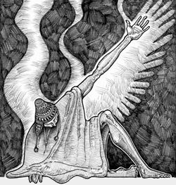Entre los indios nivaklé o chulupí, son los hombres-pájaros dueños de la lluvia, las nubes, el viento y la tormenta. En los orígenes del mundo eran hombres, pero se consideraron agraviados por las mujeres y resolvieron inmolarse en una hoguera de la que salieron convertidos en pájaros de distintas especies. Volaron al cielo y no regresaron jamás.
El Duende de la Quebrada
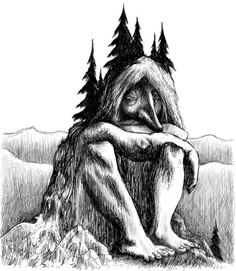El Duende de la Quebrada es una criatura mítica presente en las leyendas de Salta. Según la historia, este duende tiene la capacidad de conceder deseos a aquellos que lo encuentran, pero también es conocido por su naturaleza juguetona y por gastar bromas a los viajeros desprevenidos. Descrito como un ser pequeño y ágil, el duende puede aparecer y desaparecer rápidamente. Tiene una apariencia parecida a la de un anciano, pero con rasgos peculiares que le dan un aspecto mágico. El Duende de la Quebrada se divierte engañando a los viajeros y desorientándolos. Puede mover objetos, cambiar la dirección de los caminos o hacer que las personas se pierdan en las quebradas. Aunque sus bromas pueden sorprender, se dice que no busca hacer daño, simplemente disfruta de sus travesuras.
La Dama de las nieves
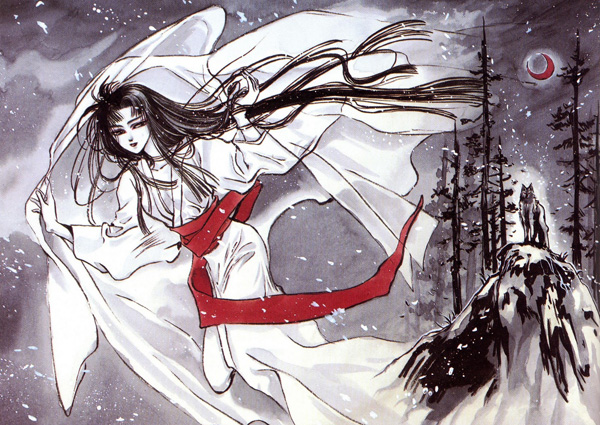La Dama de las Nieves es descrita como una figura hermosa y etérea que aparece en medio del frío y la nieve. Se dice que su presencia está ligada a la protección y el cuidado de quienes se aventuran en las montañas. La historia cuenta que la Dama de las Nieves busca compañía y calor humano en los paisajes helados. Su aparición es sorprendente y deslumbrante, rodeada de una luz y nieve brillante. Su belleza es cautivadora y provoca admiración y temor en quienes la ven. Aunque es un ser enigmático, se dice que la Dama de las Nieves tiene la intención de ayudar y proteger a los viajeros perdidos o en peligro. Hay relatos de cómo guía a aquellos que se desorientan en la montaña, mostrándoles el camino seguro de regreso.
La Mula Ánima
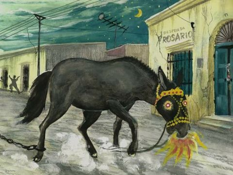Es una leyenda sobre una mujer convertida en mula debido a sus relaciones con un cura o incesto. Se la describe como una mula de color oscuro con largas orejas, que corre por los campos durante la noche, exhalando fuego y emitiendo destellos con los ojos. Se escucha el sonido de su freno de oro y ocasionalmente emite un triste rebuzno. Arrastra pesadas cadenas, como otros seres condenados. No es discreta, ya que atraviesa poblaciones importantes durante la noche a toda velocidad con todo su aparato. Los perros ladran enloquecidos cuando se acerca. Persigue a las ovejas y se alimenta exclusivamente de carne, cazando animales y, según se dice, también niños. Se dice que le gusta acechar en las calurosas y pesadas siestas de verano, en las galerías de antiguas estancias y los patios de los ranchos. Quienes la miran, mueren o sufren desgracias. Su rebuzno, lleno de dolor y angustia, estremece a quienes lo escucha
El Pújllay
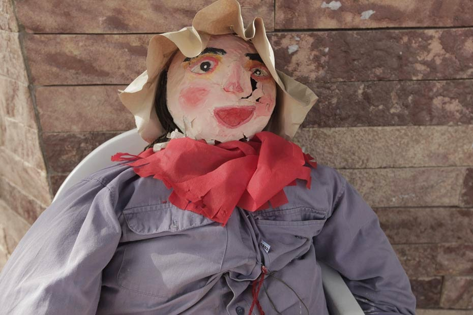El Pújllay es una divinidad diaguita alegre y festiva, que acostumbraba acompañar a la gente quee iba a los algarrobales a recolectar sus chauchas de color dorado. Esta festiva criatura acostumbra a acompañarlos con canticos, y al terminarr el dia y llegado el Carnaval, dejaba atras su apariencia de dios y tomando la forma de un muñeco pintarrajeado y andarajoso, montado en burro o en chivo.
La Salamanca

"La Salamanca" es un encuentro secreto y enigmático que ocurre durante la noche en un lugar apartado y oculto. En esta reunión, brujas, hechiceros y seres sobrenaturales se reúnen para celebrar rituales y practicar la magia. El lugar está decorado con luces brillantes, música y danzas que crean una atmósfera mágica y fascinante. La leyenda cuenta que aquellos que participan en "La Salamanca" establecen pactos con el diablo para obtener poderes sobrenaturales, riquezas o conocimientos ocultos. Se dice también que pueden transformarse en animales, como gatos o perros negros, para llevar a cabo acciones malévolas. Sin embargo, aquellos que asisten a este encuentro deben pagar un precio muy alto. Se cree que el diablo reclama sus almas o les exige favores a cambio de los deseos concedidos. Además, los participantes están condenados a vivir en la oscuridad y deben ocultar sus actividades de la sociedad, ya que serían juzgados y condenados por practicar la brujería.
El Ukaco
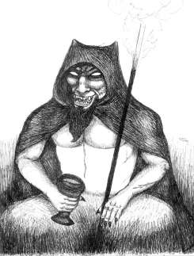Ukaco es el señor de las tinieblas, amo de las minas, y del mundo subterráneo. Su culto, adaptado y revitalizado por los trabajadores mineros, hace que si encuentran una veta, deben entronizar la figura de Ukaco en una distante y abandonada mina. Levantarán entonces los "altares del diablo", representándolo con ojos grandes, orejas puntiagudas, dientes filosos, cuernos arqueados y una larga melena, en la mano izquierda sostiene un trozo del mineral encontrado y en la otra un tridente. Allí se depositan ofrendas similares a las que se entregan a la Pachamama; coca, cigarrillos, alcohol y sahumerio con bastante azufre. En las fiestas del carnaval, precisamente el día martes se lleva a cabo la challada o challaco de minas a fin de que Ukaco mantenga la veta fructífera.
El Chiqui
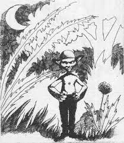El chiqui era un espiritu invisible, un fantasma que solo reconocia un santuario: el algarrobo mas viejo e imponente decada valle. Desde la posesion de los alfarrobales habia sido el principal punto de disputa entre las aldeas. El culto al Chiqui se basaba en ña posesion de determinados algarrobos-santuarios y en testos, como idniscutible testimonio de posesion, en ese algarrobose exhibian las cabezas de animales colgados que habian sido cazados. De esta manerase podia apaciguar el espiritu de eñ Chiqui y se evitarian las luchas entre comunidades vecinas. En algunas zonas se lo representa mas como un pequeño duende que se encarga solo en viajar por estos santuarios dispersos por Salta.
El Llastay
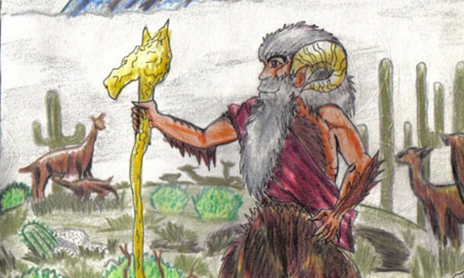Conocido también como Llastay o Llajtay. Dios tutelar de las aves y protector de los animales del cerro. Suele aparecer como un anciano de barba blanca portando un cetro y una flauta sosegando a las fieras con una suave melodía. Es el equivalente al Coquena de la Puna. Calza ojotas que son como alas en sus pies, ya que le permiten subir y bajar los cerros con inverosímiles brincos. Puede tomar la forma de un joven o de alguno de los animales a los que protege, entonces será el animal distinto de la manada, a quien se le pide permiso para cazar, dejándole una ofrenda entre piedras. Se lo invoca para tener éxito en la cacería y no apunarse en los cerros. La ofrenda ritual consiste en un "cocho", compuesto de harina de maíz tostada y polvo de algarroba negra o azúcar. A veces se presenta con un rostro angelical y hace de guía en medio del desierto, cuando capta la bondad en quienes se aproximan de manera tranquila y pacífica a la manada. En otras ocasiones desata toda su furia contra los cazadores mostrándose con una cabeza de demonio y lanzando lenguas de fuego por su boca y nada puede detenerlo.
El ekeko
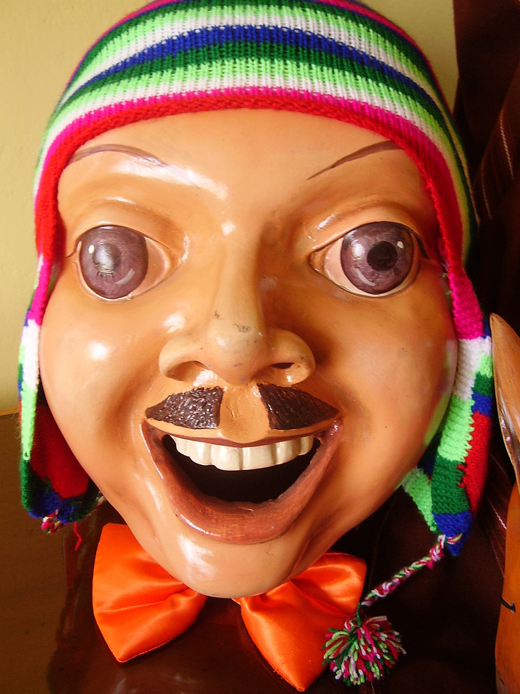El Ekeko es una figura de arcilla que representa a un hombre vestido con atuendos típicos de la región andina. Tiene alrededor de 20 cm de altura y lleva pequeñas bolsas colgando de su cuerpo, las cuales contienen cereales, tabaco y billetes enrollados. Estos objetos son considerados como ofrendas para atraer la buena fortuna y obtener bienes materiales. Para obtener los favores deseados, se debe "hacer fumar" al Ekeko colocando un cigarrillo encendido en su boca, que es una oquedad en la figura. Si el deseo es aceptado, el cigarrillo emitirá humo como si el Ekeko estuviera fumando.
Ajataj
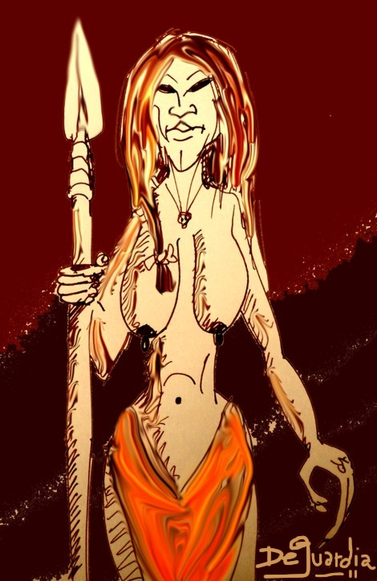Deidad wichi femenina, difundida en la región noreste de la Argentina y creada por Nilatej El Supremo; reina sobre la región subterránea, rigiendo con mano despótica su malévola hueste de potencias nefastas para el hombre, los Ajat. Estos últimos son espíritus malignos, creados especialmente por la diosa para que le sirvan de esclavos. Ajataj, por medio de sus Ajat, domina a los shamanes, a quienes puede otorgar o quitar sus poderes a voluntad; también es la que desencadena y detiene plagas y enfermedades, y su poder se extiende al mundo subacuático de ríos y arroyos. Su forma humana, cuando la adopta, es la de una mujer desnuda, de grandes pechos caídos y largos cabellos negros, descuidadamente trenzados.
El Mikilo
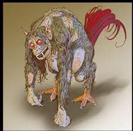Este duende se caracteriza por ser muy poco sociable y esquivo. Es muy reconocido por su grito mugiente, como un lúgubre lamento nocturno. El mikilo asusta desde los tiempos de los daguitas a los infantes traviesos que se escapan de sus hogares a la hora de la siesta. Comentan que es un tramposo. Muchos lugareños lo detallan como un animal diabólico que tiene medio cuerpo de hombre y el otro, de perro. Posee patas de gallo, manos significativamente gruesas y una larga cola hecha de plumas. No siempre agrede a los campesinos, a veces únicamente los espía.
El Supay
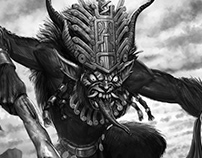El Supay es una deidad relacionada con la muerte y el inframundo en la mitología. Era considerado el señor de los muertos y gobernaba sobre los espíritus de los difuntos. Tenía una apariencia demoníaca, con cuernos y aspecto monstruoso, y se creía que vivía en el subsuelo, en cuevas o en las montañas. El Supay tenía poder sobre la vida y la muerte. Castigaba a las almas de los malvados y recompensaba a las almas justas. Además, se creía que podía causar enfermedades y desgracias a aquellos que no le rendían culto adecuado o no seguían los rituales funerarios. También se decía que el Supay era guardián de tesoros escondidos en el inframundo. Aquellos que se aventuraban a buscar estos tesoros debían enfrentar peligros y pruebas impuestos por el Supay, arriesgando sus vidas.
El Gualicho
El gualicho es la forma en la que estos pueblos personificaban al causante de todos sus males y desgracias. Es un espíritu maligno que busca provocar daño en todas las formas posibles. Según cuenta la leyenda, habría nacido en las tierras de Tandil, y desde allí habría vagado hasta llegar a la Patagonia. Su aura perversa está ligada al entorno natural, por lo que se lo asocia con lugares específicos: algún árbol añoso, alguna piedra, cuevas y sendas. Es por esto que hay que andar con mucho cuidado por algunos lugares, para no sufrir las consecuencias de su fuerza poderosa. Al parecer, es imposible escapar de su vigilancia: todos estamos a merced del gualicho. Se presenta de distintas formas, a veces más crueles, otras más traviesas. Incluso en ocasiones llega disfrazado de amor. El gualicho puede tomar la forma de una pelea violenta, de un accidente provocado por un simple descuido o de un engualichamiento de amor. Detrás de este último, sin embargo, siempre hay alguien que lo solicita, y dicen que es lo más difícil de superar.
El Sachayoj
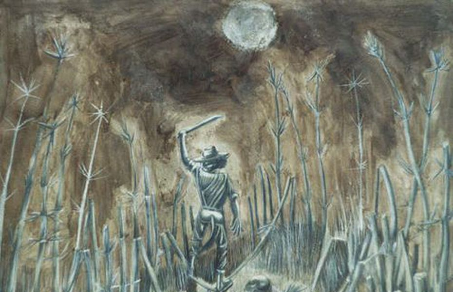Sacha" significa bosque; "yoj", señor. El sachayoj es el protector del monte y vive en sus profundidades. Dicen que tiene la figura de un anciano con larga cabellera; otros que toma la forma de un animal (conejo, vizcacha, guasuncha, etc.) de tamaño gigantesco y los más fantasiosos, que es un ser mitad humano y mitad animal (la cara y el torso de un anciano y los miembros inferiores de un puma, una guasuncha o un zorro). También comentan que tiene forma de un arbusto viviente, con cara humana. Todos coinciden en que este guardián suele castigar con terrible furia a los cazadores o personas que depredan la flora o fauna de nuestros montes.Cuenta la leyenda que sus gritos, que semejan los golpes del hacha del bosque, atrae al hachero hacia la espesura del monte y una vez perdido lo ataca sin compasión.
El Ijwala
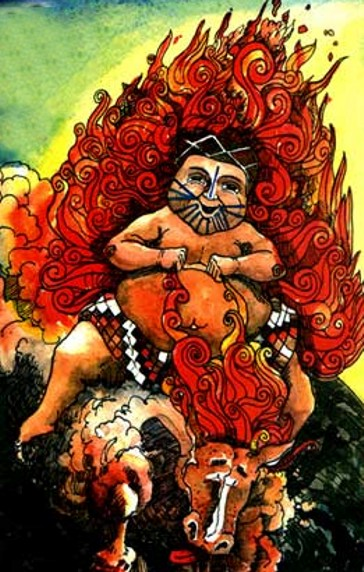Es el hombre fuego en la mitología Wichi. Fue llamado primigeniamente Itoj Pajla. En el principio de los principios fue el gran cocinero del hombre. Cuentan, que en una ocación, se onojó muchísimo con el hornero por haberle robado el fuego, lleno de ira incendió el mundo. Luego de esto subió a los cielos y se convirtió en Ijwala, el Dios Solar. Otra versión dice que vivía en la tierra de los Weenhayec y se hizo glotón, se comia todo sin invitar nada. Su hija estaba casada con un buen hombre, que lo perdió por culpa de Ijwala. La gente se cansó de la acitutd del Sol y este se fue al cielo, pero seguía devorando todo. Cuando los Weenhayek ven que alguien come demasiado lo comparan con Ijwala, rememorando al Sol glotón. Para los wichis el sol es un ente masculino aunque no faltan versiones que lo describen como una deidad femenina que subió a los cielos castigada por Tokjuaj, dios de la creación.